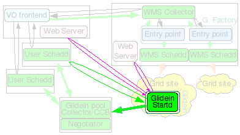

Installation of the WMS Collector and collocated glidein Factory
|
The glidein Factory
node will be the Condor
Central Manager for the WMS, i.e. it will run the Condor
Collector and Negotiator daemons, but it will also act as a Condor
Submit node for the glidein factory, running Condor schedds used
for Grid submission.
On top of that, this
node also hosts the glidein factory daemons. The glidein Factory is
also responsible for the base configuration of the glideins (although
part of the configuration comes from the VO frontend).
A small installation
nees one CPU and a moderate amount of memory
(1GB should be enough).
A major installation,
serving tens of sites and several thousand glideins will require
several CPUs (recommended 4-8: 1 for the Condor damons,
1-2 for the glidein factory daemons and 2 or more for Condor-G
schedds) and a reasonable amount of memory (at least
2GB, 4GB for a large installation to provide some disk
caching).
The disk
needed is for binaries, config files, log files and Web monitoring
data (For just a few sites, 10GB could be enough, larger
installations will need 100+GB to maintain a reasonable
history). Monitoring can be pretty I/O intensive when serving many
sites, so get the fastest disk you can afford, or consider setting up
a RAMDISK
It must must be on
the public internet, with at least one port open to the
world; all worker nodes will load data from this node trough
HTTP.
A reasonably recent Linux OS
(RH/SL4 nad RH/SL5 tested at press time).
The Python interpreter (v2.3.4 or
above)
The perl-Time-HiRes rpm.
The OSG
client software.
A HTTP server, like Apache or TUX.
The Condor
distribution.
The RRDTool package (v1.2.18 or
later)
The M2Crypto python
library (v0.17 or later)
The javascriptRRD package (0.5 or later)
The glideinWMS
software.
|


|
NOTE:
- Condor version v7.3.1 has a known issue with incorrect return/exit codes of condor_status and condor_q
- If you are using Condor version v7.3.2 disable VOMS checking in condor_config file used by condor daemons other than that used by user schedd. VOMS checking adds unrequired overhead. To do so, set
USE_VOMS_ATTRIBUTES = False
or for individual condor daemons like collector
COLLECTOR.USE_VOMS_ATTRIBUTES = False
The glidein Factory needs a
HTTP server, like Apache or TUX.
The server should be installed on the same node, but a different node can be
used as long as the web area is writable from this one.
Servers often come
pre-installed with HTTP server software, so if you have one running, just
reuse it.
Else, the installer can help you install one (as root).
To use the installer, move
into
glideinWMS/install
and execute
./glideinWMS_install
You will be presented with
this screen:
What do you want to
install?
(May select several options at one, using a , separated list)
[1] glideinWMS Collector
[2] Glidein Factory
[3] GCB
[4] pool Collector
[5] Schedd node
[6] Condor for VO Frontend
[7] VO Frontend
[8] Components
Select
8.
You will be given another
menu:
What do you want to
install?
(May select several options at one, using a , separated list)
[a] OSG VDT client
[b] Base Condor installation
[c] Web server
[d] rrdtool graphics package
[e] PostgreSQL database
[f] Quill-specific PostgreSQL database
Select
c.
Now follow the instructions.
Most of the questions should be fairly straightforward.
You will also need the python
module for RRDTool (v1.2.18 or
later). Many systems come with packages for it; if possible use
that.
RPMs for Redhat/Scientific
Linux distributions can be found at
http://dag.wieers.com/rpm/packages/rrdtool/
Install python-rrdtool*.rpm
and related dependencies.
If installing as root is not
an option, you can build from the sources, as the glidein factory
user, and put the python
libraries into the PYTHON_PATH.
The source code can be downloaded from:
http://oss.oetiker.ch/rrdtool/pub/
Beware: The build process has
several dependencies that make it complicated. Use this option only if you
cannot install from RPMs (or similar).
You will need the M2Crypto python library. A
few systems include it in the software distribution; if possible install the
system one.
If your system does not come
with m2crypto package, or you do not can/want install it as root, compile it
from source as the glidein factory user.
The source code can be downloaded from:
http://chandlerproject.org/Projects/MeTooCrypto#Downloads
The build process is very
easy:
python setup.py build
python setup.py install --root <base
dir>
Finally add M2Crypto
site-packages into the PYTHONPATH, possibly in the .profile, .bashrc and/or
in the .cshrc.
The exact path is system specific. On a 32bit system with python 2.3.x it
will look like this:
export
PYTHONPATH=$PYTHONPATH:<base
dir>/usr/lib/python2.3/site-packages/
You will need the javascriptRRD package.
It contains the javascript libraries needed by the monitoring.
Just download the tarball,
and untar it. You will need to point the installer to this directory.
The glideinWMS Collector can
be installed either as root or as a non privileged user. There is no real
advantage to install as root, so non-privileged installation is
recommended.
Either case, the Collector needs access to GSI
credentials. The recommended setup shares the credentials with the
glidein factory (see below).
The whole process is managed
by a install script described below. You will need to provide a valid Condor tarball, so you
may as well download it before starting the installer.
Move into
glideinWMS/install
and execute
./glideinWMS_install
You will be presented with
the service selection screen. Follow the instructions
and install all the software components. Most of the questions should be
fairly straightforward. The part that is not completely automatic is the
configuration of the GSI security; you will need to provide the DN of the
glidein factory (if different from the collector one) and the DN of the VO
frontend.
If you are installing privilage separation, you need to install glideinWMS Schedds and Collector as root
Here a possible set of
answers is presented; your setup will probably be slightly
different:
Welcome to the glideinWMS Installation Helper
What do you want to install?
(May select several options at one, using a , separated list)
[1] glideinWMS Schedds and Collector
[2] Glidein Factory
[3] GCB
[4] User Pool Collector
[5] User Schedd
[6] Condor for VO Frontend
[7] VO Frontend
[8] Components
Please select: 1
The following profiles will be installed:
[1] glideinWMS Schedds and Collector
Installing WMS Schedds and Collector
Installing condor
Which user should Condor run under?: [condor] gfactory
You will now need the Condor tarball
You can find it on http://www.cs.wisc.edu/condor/
Versions v7.2.2 and 7.3.1 have been tested, but you
should always use the latest one
Where do you have the Condor tarball? /home/gfactory/downloads/condor-7.4.2-linux-x86_64-rhel5-dynamic.tar.gz
Checking...
Seems condor version 7.4.2
Where do you want to install it?: [/opt/glidecondor] /home/gfactory/glidecondor
Directory '/home/gfactory/glidecondor' does not exist, should I create it?: (y/n) y
Installing condor in '/home/gfactory/glidecondor'
If something goes wrong with Condor, who should get email about it?: admin@my.org
Extracting from tarball
Running condor_configure
Installing Condor from /home/gfactory/glidecondor/tar/condor-7.4.2 to /home/gfactory/glidecondor
Condor has been installed into:
/home/gfactory/glidecondor
Configured condor using these configuration files:
global: /home/gfactory/glidecondor/etc/condor_config
local: /home/gfactory/glidecondor/condor_local/condor_config.local
You should look inside the installation log for some details about how
Condor was installed.
Created scripts which can be sourced by users to setup their
Condor environment variables. These are:
sh: /home/gfactory/glidecondor/condor.sh
csh: /home/gfactory/glidecondor/condor.csh
Do you want to split the config files between condor_config and condor_config.local?: (y/n) [y] y
Condor installed
Privilege separation is needed to securely support multiple frontends.
Do you want to install it?: (y/n) [y]y
A privsep config (/etc/condor/privsep_config) is already in place. Do you want to recreate it?: (y/n) y
What is the factory username: gfactory
List the usernames the factroy will use
to separate frontends from one another.
An empty username entry means you are done.
Username: frontenduser1
Username: frontenduser2
Username:
Directories needed by the factory will be given special
treatment to ease administration.
Where will the factory store its config files?[/var/gfactory/glideinsubmit] /home/gfactory/glideinsubmit
Directory '/home/gfactory/glideinsubmit' does not exist, should I create it?: (y/n) y
Where will the factory store its log files?[/var/gfactory/glideinlogs] /var/gfactory/glideinlogs
Where will the factory store the client log files?[/var/gfactory/clientlogs] /var/gfactory/clientlogs
Directory '/var/gfactory/clientlogs' does not exist, should I create it?: (y/n) y
Where will the factory store the client proxies?[/var/gfactory/clientproxies] /var/gfactory/clientproxies
Directory '/var/gfactory/clientproxies' does not exist, should I create it?: (y/n) y
Privilege separation setup completed
Configuring GSI security
GSI security relies on a list of trusted CAs
Where can I find the directory with the trusted CAs?
Do you want to get it from VDT?: (y/n) y
Do you have already a VDT installation?: (y/n) y
Where is the VDT installed?: /home/gfactory/vdt
Using VDT installation in /home/gfactory/vdt
To use the GSI security for WMS Collector, you either need
a valid GSI proxy or a valid x509 certificate and relative key.
Its subject (i.e. DN) will be added as the trusted daemon
in the condor configuration.
Will you be using a proxy or a cert? (proxy/cert) proxy
Where is your proxy located?: /home/condor/security/grid_proxy.wmspool
My DN = '/DC=org/DC=doegrids/OU=Service/CN=gfactory/gfactory1.my.org'
You will most probably need other DNs in the condor grid mapfile.
The VO Frontend(s) will be contacting the WMS Collector
and will interact as daemons. Their subjects (i.e. DNs)
will most likely be needed.
Please insert all such DNs, together with a user nickname.
An empty DN entry means you are done.
DN: /DC=org/DC=doegrids/OU=Services/CN=frontend1.my.org
nickname: [condor001] vofrontend1
Is this a trusted Condor daemon?: (y/n) y
DN: /DC=org/DC=doegrids/OU=Services/CN=frontend2.my.org
nickname: [condor002] vofrontend2
Is this a trusted Condor daemon?: (y/n) y
DN:
What name would you like to use for this pool?: [My glideinWMS pool] GlideinWMSPool
What port should the collector be running?: [9618] 9618
How many secondary schedds do you want?: [9] 9
[...]
The installer will also start the Condor
daemons.To stop the Condor
daemons, issue
killall
condor_master
To start them
again:
cd <install dir>;
./start_condor.sh
The glidein Factory needs a
x509 proxy to communicate with the rest of the world. You need to create such
proxy before instantiating a glidein Factory and then keep it valid for the
life of the factory. If used for job submission (i.e. if the VO Frontends do
not pass their own proxy), this proxy must at any point in time have a
validity of at least the longest expected job being run by the glideinWMS
(and not less than 12 hours).
How you keep this proxy valid (via MyProxy, kx509, voms-proxy-init from a
local certificate, scp from other nodes, or other methods), is beyond the
scope of this document.
The glidein factory itself
should be installed as a non privileged user. The provided installer can be
used to create the configuration file, although some manual tunning will
probably be needed.
Move into
glideinWMS/install
and execute
./glideinWMS_install
You will be presented with
the service selection screen. Follow the instructions
and install all the software components. Most of the questions should be
fairly straightforward. The part that is not completely automatic is the list
of GCBs and the configuration of the GSI security; you will need to provide
the DNs of all the submit nodes. It is strongly recommended to use CCB over GCB if possible.
Here a possible set of
answers is presented; your setup will probably be slightly
different:
Welcome to the glideinWMS Installation Helper
What do you want to install?
(May select several options at one, using a , separated list)
[1] glideinWMS Schedds and Collector
[2] Glidein Factory
[3] GCB
[4] User Pool Collector
[5] User Schedd
[6] Condor for VO Frontend
[7] VO Frontend
[8] Components
Please select: 2
The following profiles will be installed:
[2] Glidein Factory
Installing Glidein Factory
Do you have already a javascriptRRD installation?: (y/n) y
Where is javascriptRRD installed?: /home/gfactory/javascriptrrd-0.5.0
The Glidein Factory can be configured to use a default GSI proxy for submission.
However, this operation mode is not recommended.
Do you want to use such a proxy?: (y/n) [n] n
As you probably know, privilege separation
is needed to securely support multiple frontends.
If you are using privilege separation, the factory directories
must be world readable (except for the proxies dirs)
Hosting the config and log files in the factory home directory
is thus not recommended anymore.
Where will you host your config files?: [/var/gfactory/glideinsubmit] /home/gfactory/glideinsubmit
Where will you host your log files?: [/var/gfactory/glideinlogs] /var/gfactory/glideinlogs
Where will you host the client log files?: [/var/gfactory/clientlogs] /var/gfactory/clientlogs
Where will you host the client proxies files?: [/var/gfactory/clientproxies]/var/gfactory/clientproxies
Where will the web data be hosted?: [/var/www/html/glidefactory] /var/www/html/glidefactory
Directory '/var/www/html/glidefactory' not empty.
Should I use it anyhow?: (y/n) y
What Web URL will you use?: [http://gfactory1.my.org/glidefactory/] http://gfactory1.my.org/glidefactory
Give a name to this Glidein Factory?: [mySites-gfactory1] GlideinFactory-gfactory1
Give a name to this Glidein instance?: [v1_0] v1_0
What is the Condor base directory?: [/home/gfactory/glidecondor]/home/gfactory/glidecondor
The following glidein schedds have been found:
[1] schedd_glideins1@gfactory1.my.org
[2] schedd_glideins2@gfactory1.my.org
[3] schedd_glideins3@gfactory1.my.org
[4] schedd_glideins4@gfactory1.my.org
[5] schedd_glideins5@gfactory1.my.org
[5] schedd_glideins6@gfactory1.my.org
[5] schedd_glideins7@gfactory1.my.org
[5] schedd_glideins8@gfactory1.my.org
[5] schedd_glideins9@gfactory1.my.org
Do you want to use all of them?: (y/n) y
Using ['schedd_glideins1@gfactory1.my.org', 'schedd_glideins2@gfactory1.my.org', 'schedd_glideins3@gfactory1.my.org', 'schedd_glideins4@gfactory1.my.org', 'schedd_glideins5@gfactory1.my.org', 'schedd_glideins6@gfactory1.my.org', 'schedd_glideins7@gfactory1.my.org', 'schedd_glideins8@gfactory1.my.org', 'schedd_glideins9@gfactory1.my.org']
Do you want to use CCB (requires Condor 7.3.0 or better)?: (y/n) y
Do you want to use gLExec?: (y/n) y
Do you want to fetch entries from RESS?: (y/n) [n] y
Which RESS server should I use?: [osg-ress-1.fnal.gov] osg-ress-1.fnal.gov
Select Condor RESS constraint: [] StringlistMember("VO:MyVO",GlueCEAccessControlBaseRule)
Define a python filter: [(int(GlueCEPolicyMaxCPUTime)==0) or (int(GlueCEPolicyMaxCPUTime)>(72*60))] (int(GlueCEPolicyMaxCPUTime)>(1))
Found 28 additional entries
Do you want to use them all?: (y/n) y
Do you want to fetch entries from BDII?: (y/n) [n]n
Please list all additional glidein entry points,
Entry name (leave empty when finished):
Should glideins use the more efficient Match authentication (works for Condor v7.1.3 and later)?: (y/n) [y] y
For security reasons, we want to whitelist all the frontends that we will be serving.
Each frontend should be segregated to its own (set of) username(s).
If you do not want privilege separation, you can still just use the factory user.
Please list the frontends you will be serving:
Frontend security name (leave empty when finished): vofrontend1
Frontend identity (like vo1@gfactory1.my.org): frontenduser1@gfactory1.my.org
Frontend proxy security class: [frontend]
Username: frontenduser1
Frontend security name (leave empty when finished): vofrontend2
Frontend identity (like vo1@gfactory1.my.org): frontenduser2@gfactory1.my.org
Frontend proxy security class: [frontend]
Username: frontenduser2
Frontend security name (leave empty when finished):
Do you want to create the glidein (as opposed to just the config file)?: (y/n) [n]n
To create the glidein, you need to run
/home/gfactory/glideinWMS/creation/create_glidein /home/gfactory/glideinsubmit/glidein_v1_0.cfg/glideinWMS.xml
Configuration files are located in /home/gfactory/glideinsubmit/glidein_v1_0.cfg
If you followed the example
above, you ended up with a configuration file in /home/gfactory/glideinsubmit/glidein_v1_0.cfg/glideinWMS.xml. Edit this file to suit your needs
and than create the factory instance as described in the Manual configuration
section below.
At this point you can start
the factory with
<install
dir>/factory_startup start
where the <install
dir> is the one written out by the installation
script.
To stop the factory the
factory, use
<install
dir>/factory_startup stop
The glidein factory can also
be configured manually.
The complete guide can be found in the glideinWMS documentation, but in example-config/glide-factory/config_v1.xml
you can find a working example.
Once a configuration file is
ready, you can create the glidein Factory by executing
cd glideinWMS/creation
./create_glidein <config file>
The startup procedure is the
same as described above.
Occasionally, you may need to change the glidein Factory configuration.
This is done by updating the configuration file and reconfiguring.
Warning: Never update the <install dir>/glideinWMS.xml
file! Either use the configuration file you used to install it, or make a
copy of the glideinWMS.xml file and modify that one.
Once you are done editing the
work config file, reconfigure the factory with
<install
dir>/factory_startup reconfig <work
config>
If the factory was running,
the procedure will stop the factory before reconfiguring it, and restart it
afterwards.
There are several ways to
monitor the entry points of the glidein factory:
You can either monitor the
factory as a whole, or just a single entry point.
The factory monitoring is located at a URL like the one
below
http://gfactory1.my.org/glidefactory/monitor/glidein_v1_0/
Moreover, each entry point,
has its own history on the Web.
Assuming you have a SanDiego entry, it can be monitored at
http://gfactory1.my.org/glidefactory/monitor/glidein_v1_0/entry_SanDiego/
You can get the equivalent of
the Web page snaphot by using
cd glideinWMS/tools/
python wmsXMLView.py
The glidein factory writes
two log files per entry point factory_info.YYYYMMDD.log and
factory_err.YYYYMMDD.log.
Assuming you have a SanDiego entry, the log files are in
/home/gfactory/glidein_submit/glidein_v1_0/entry_SanDiego/log
All errors are reported in
the factory_err.YYYYMMDD.log. file, while factory_info.YYYYMMDD.log
contains entries about what the factory is doing.
Each glidein creates 2 files
on exit; job.ID.out and job.ID.err.
Assuming you have a SanDiego entries, the log files are in
/home/gfactory/glidein_submit/glidein_v1_0/entry_SanDiego/log
Problems are usually
reasonably easy to spot.
The glidein factory also
advertises summary information in the WMS collector.
Use condor_status:
condor_status
-any
and look for
glidefactory and glidefactoryclient ads.
Back to
the index
glideinWMS support: glideinwms-support@fnal.gov